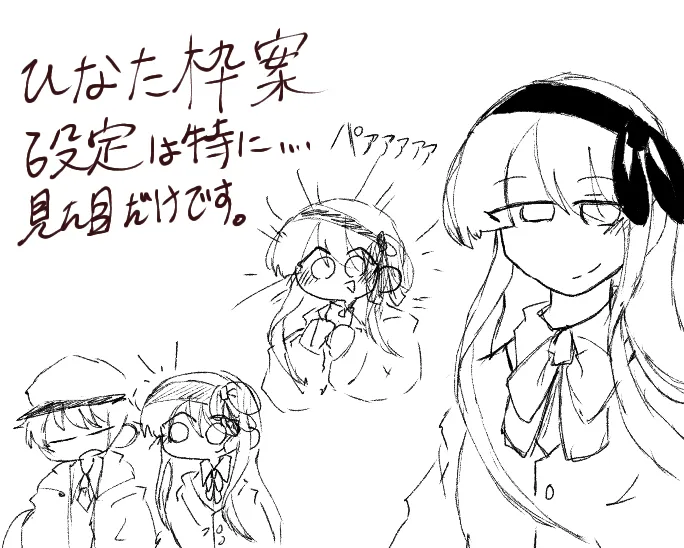
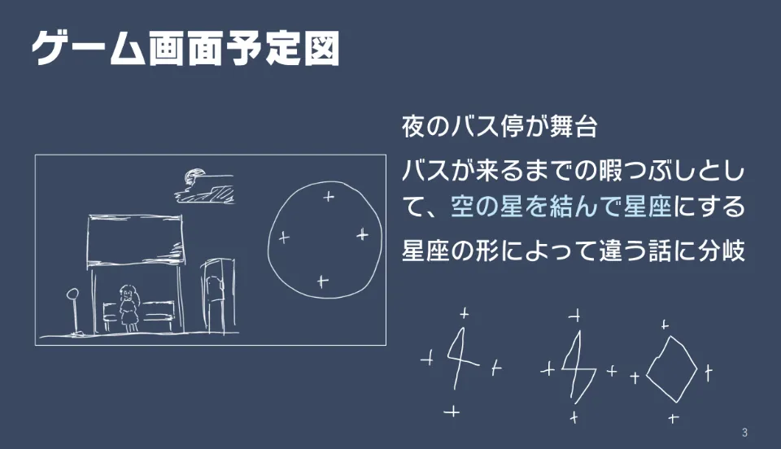

「星空のターミナル」その１
2026年11月22日 / 執筆: 安部葉月
こんにちは 「星空のターミナル」ディレクターの安部葉月です
これから毎週、このゲームの進捗を発表します！
前回の記事はこちら↓
 新しいゲームプロジェクトが始動しました！ | CreativeStaffこのサークルで新たなゲーム企画が始動しました！ 「星空のターミナル」というタイトルです 主人公・春香とその親友・ひなたの、ちょっとしっとりストーリー！ なお、この企画は音楽アーティスト・IshikurCreativeStaff
新しいゲームプロジェクトが始動しました！ | CreativeStaffこのサークルで新たなゲーム企画が始動しました！ 「星空のターミナル」というタイトルです 主人公・春香とその親友・ひなたの、ちょっとしっとりストーリー！ なお、この企画は音楽アーティスト・IshikurCreativeStaff
進捗
キャラデザがだいぶできてきましたー（あと音楽もちょっと）
このゲームは↑の２人「春香」（帽子の子）「ひなた」（カチューシャの子）がメインキャラです

星を結んで分岐する、というのがメインのシステムで、基本はノベルゲームとして進行します
このシステムはunityroomのゲームから着想を得ました！
春香
この物語の主人公です
マイペースでおとなしい！友達をたくさん作りたがっています
ひなた
親友です
明るくて元気！
今週は進行がかなりなだらかでしたが、本格的に作業が始まります！おたのしみに